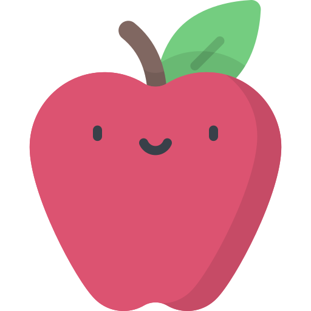

<!--
  Generated template for the WelcomePage page.

  See http://ionicframework.com/docs/components/#navigation for more info on
  Ionic pages and navigation.
-->
<ion-content padding>
  <ion-title>
    Acompanhamento <br> de sala de aula
  </ion-title>
    <ion-grid>
      <ion-row>
        <ion-col size=3 ></ion-col>
        <ion-col size=6 id="icon-principal">
          
        </ion-col>
        <ion-col size=3 ></ion-col>
      </ion-row>
    </ion-grid>
</ion-content>

<ion-footer>
  <div style="display: flex; flex-direction: column; margin: 30px;">
    <button ion-button>Cadastrar</button>
    <button ion-button color="light" class="btn-cadastrar" (click)="login()">Entrar</button>
  </div>
</ion-footer>
